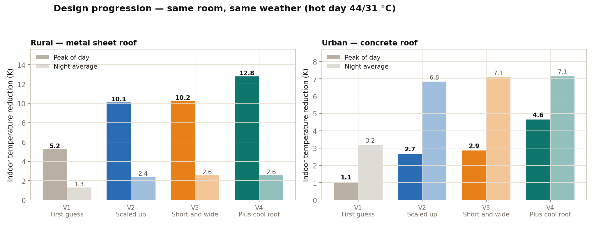
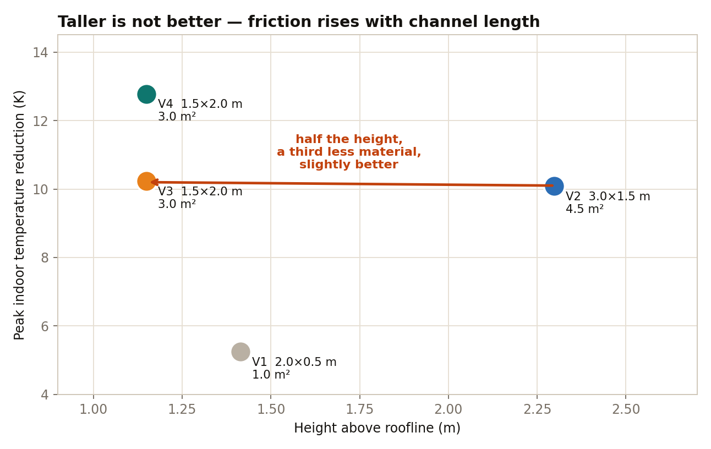
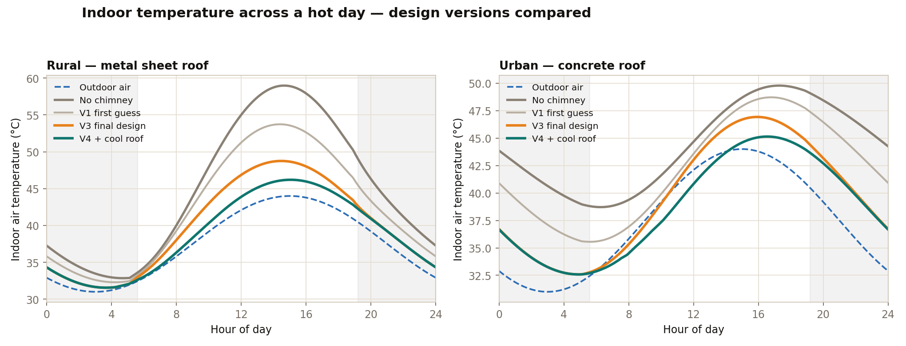

Every figure on this site comes from one transient energy-balance model, validated against published experimental data before any design conclusion was drawn.
A transient global energy balance with four thermal nodes — glazing, channel air, absorber plate and phase change material — plus a room node, stepped at 20 second intervals and run to a settled day. Airflow is solved at every step by balancing stack pressure against wall friction and minor losses, so the system self-regulates: more flow means less heating, which means less buoyancy, which means less flow. The PCM uses the effective heat capacity method, so the melting plateau emerges from the physics rather than being imposed.
The model was run against published experimental setups before being used for design.
| Source | Measured | Model predicts | Agreement |
|---|---|---|---|
| Ong & Chow (2003) | 0.25–0.39 m/s channel velocity | 0.30 m/s | within range |
| Khedari et al. | 8–15 air changes per hour | 7.1 ACH | slightly low |
| Mathur et al. | 5.6 air changes per hour | higher | overpredicts |
Room dimensions come from census data rather than assumption. The average rural dwelling is roughly 430–494 sq ft, and in 40% of households five people share a single room. A 10 × 10 ft room matches that, so the modelled space is 3 × 3 m with a 2.8 m ceiling and five occupants.
| Parameter | Rural | Urban informal |
|---|---|---|
| Roof | Corrugated metal sheet, uninsulated | 125 mm RCC slab |
| Thermal mass | Low | High |
| Infiltration | 1.5 ACH | 1.0 ACH |
| Dominant problem | Midday overheating | Night-time heat release |
Anchored to IMD climatology and official heatwave definitions, so the assumptions are checkable.
| Scenario | Max | Min | Basis |
|---|---|---|---|
| Normal summer day | 39.5 °C | 27.5 °C | Climatological mean for May–June |
| Hot day | 44.0 °C | 31.0 °C | Meets IMD heatwave threshold |
| Extreme day | 47.0 °C | 35.0 °C | Severe heatwave; night matches Delhi record of 35.2 °C |
Indoor temperature reduction against the same room with no chimney fitted, at the final 3.0 m² design.
| Scenario | Rural peak | Rural night | Urban peak | Urban night |
|---|---|---|---|---|
| Normal | 9.0 K | 2.6 K | 3.0 K | 7.0 K |
| Hot | 10.2 K | 2.5 K | 3.2 K | 7.0 K |
| Extreme | 11.5 K | 2.3 K | 3.9 K | 6.7 K |



Tested as a complement rather than a competitor, and the honest finding is that coating does more of the daytime work than the chimney does.
| Fitted | Peak of day | Night average |
|---|---|---|
| Reflective coating only | 6.0 K | 0.9 K |
| Chimney only | 5.2 K | 3.9 K |
| Both | 7.1 K | 3.9 K |
Coating blocks heat entering during the day but does almost nothing after dark, because there is no sunlight to reflect and the structure is still radiating stored heat inward. The chimney delivers its full night benefit regardless of roof colour.
Three separate studies failed in the same direction, and a fourth explained why. Past roughly 25 air changes per hour the room stops responding to more airflow, because it settles where heat gain equals heat removed. Quadrupling the collector from 3 to 12 m² buys 2.8 K. Anything that only adds flow — storage, tilt, extra area, the glazing itself — runs into the same ceiling.
That one mechanism sized the collector at 3.0 m² rather than 12, and it means the remaining gains have to come from reducing the heat entering the building rather than extracting air faster. It is also why reflective roof coating is part of the system rather than an optional extra. The full working is on the simulation studies page.